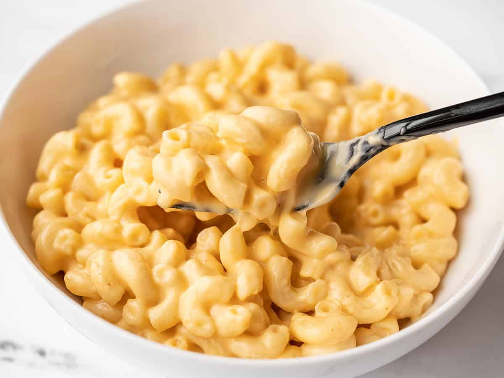

Mac And Cheese

Description
Macaroni and cheese, often abbreviated as "mac and cheese," is a classic and beloved comfort food dish
It typically consists of cooked macaroni pasta combined with a rich and creamy cheese sauce.
Ingredients
- Elbow macaroni pasta (or any pasta shape of your choice)
- Butter
- All-purpose flour
- Milk
- Cheese (common choices include cheddar, mozzarella, or a combination of different cheeses)
- Salt and pepper to taste
Steps
- Cook the macaroni pasta according to the package instructions. Drain and set aside.
- In a saucepan, melt butter over medium heat.
Add an equal amount of flour to create a roux, stirring continuously until it forms a smooth paste.
- Gradually whisk in milk, ensuring there are no lumps.
Continue to cook and stir until the mixture thickens to a smooth consistency.
- Add the shredded cheese to the milk mixture, stirring until the cheese is fully melted and the sauce becomes creamy.
Adjust the quantity of cheese to achieve the desired level of cheesiness.
- Season the cheese sauce with salt and pepper to taste.
Feel free to add other seasonings or spices, such as mustard or paprika, for extra flavor.
- Combine the cooked macaroni with the cheese sauce, ensuring all the pasta is well coated.
- For stovetop mac and cheese, serve immediately.
If you prefer baked mac and cheese, transfer the mixture to a baking dish, sprinkle breadcrumbs on top, and bake in the oven until the top is golden and bubbly.
- Garnish with additional cheese or herbs if desired, and serve hot.